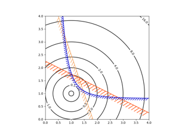
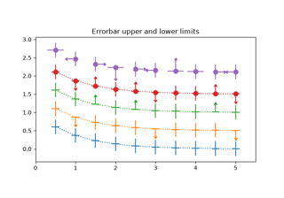
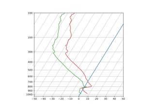
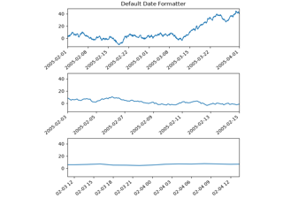

matplotlib.axes.Axes.set_xlim#
- Axes.set_xlim(left=None, right=None, *, emit=True, auto=False, xmin=None, xmax=None)[source]#
Set the x-axis view limits.
- Parameters:
- leftfloat, optional
The left xlim in data coordinates. Passing None leaves the limit unchanged.
The left and right xlims may also be passed as the tuple (left, right) as the first positional argument (or as the left keyword argument).
- rightfloat, optional
The right xlim in data coordinates. Passing None leaves the limit unchanged.
- emitbool, default: True
Whether to notify observers of limit change.
- autobool or None, default: False
Whether to turn on autoscaling of the x-axis. True turns on, False turns off, None leaves unchanged.
- xmin, xmaxfloat, optional
They are equivalent to left and right respectively, and it is an error to pass both xmin and left or xmax and right.
- Returns:
- left, right(float, float)
The new x-axis limits in data coordinates.
See also
Notes
The left value may be greater than the right value, in which case the x-axis values will decrease from left to right.
Examples
>>> set_xlim(left, right) >>> set_xlim((left, right)) >>> left, right = set_xlim(left, right)
One limit may be left unchanged.
>>> set_xlim(right=right_lim)
Limits may be passed in reverse order to flip the direction of the x-axis. For example, suppose x represents the number of years before present. The x-axis limits might be set like the following so 5000 years ago is on the left of the plot and the present is on the right.
>>> set_xlim(5000, 0)
Examples using matplotlib.axes.Axes.set_xlim#

Contouring the solution space of optimizations

Including upper and lower limits in error bars

SkewT-logP diagram: using transforms and custom projections

Format date ticks using ConciseDateFormatter
Choosing Colormaps in Matplotlib